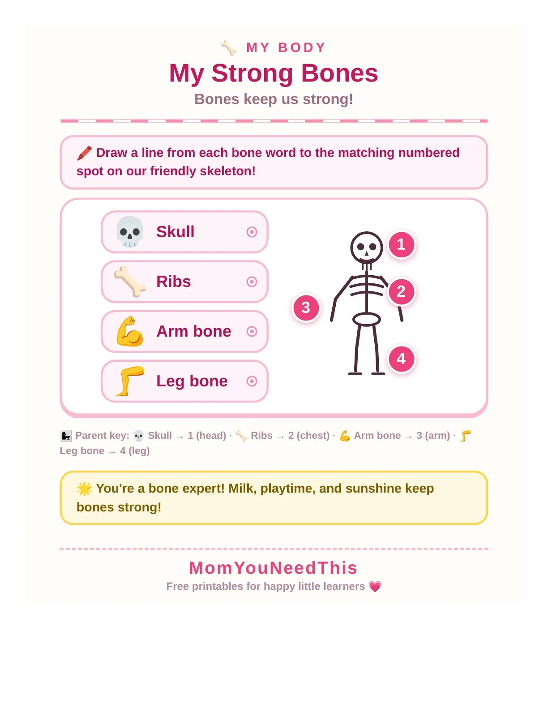

🦴 Bones Activities The Frame That Holds You Up
Did you know you have more than 200 bones? These kid-friendly activities introduce the skeleton in a fun, not-scary way — perfect for little learners who love to move.
Quick Answer
This free printable bones activity helps toddlers and preschoolers (ages 2–5) learn the skeleton: the framework of 206 bones (in grown-ups) that holds the body up, protects the soft parts — skull around the brain, ribs around the heart and lungs — and works with muscles to move. Kids learn major bone names, build a skeleton puzzle, and discover how bones keep us strong. Download and print at home with no signup needed.
At a Glance
- Ages: Toddlers and preschoolers (ages 2–5)
- Activity: Learning major bone names; building a skeleton puzzle
- Skills: Body science and bone names
- Format: Printable worksheet (PDF)
- Cost: Free, no signup
Bones are usually introduced as the Halloween kind — dry, white, still. Real bones are none of those: they are alive, growing, blood-making tissue that rebuilds itself constantly. This page teaches the friendly skeleton by wiggling it: every bone gets learned by moving the body part it lives in.
🦴 Explore Bones Activities
Learn major bone names, build a skeleton puzzle, and discover how bones keep us strong.
💡 How To Use This Activity
Print the skeleton pages and learn each bone by wiggling it: tap the skull, bend the elbow, knock on the kneecap as it appears on the page. Names stick when the body part moves. Finish with a bone hunt — how many bones can your child feel through their own skin? The print button opens the full-size page in a new tab if you prefer to print from there.

🖨️ Download Your Free Bones Activities Printable
Learn major bone names, build a skeleton puzzle, and discover how bones keep us strong. Print it out, grab the crayons, and you're ready — no signup needed.
⬇️ Download Free Printable 🖨️ Print🎁 Free printable for toddlers & preschoolers
🦴 Bones Are Not Rocks
Bones are alive. They have blood vessels and nerves inside them, they grow as your child grows, and they repair themselves when broken — a cast does not fix a bone; it just holds the pieces still while the bone does the fixing. Old bone is constantly being removed and new bone laid down, so a skeleton is less a statue than a construction site that never closes.
Babies start with more bones than grown-ups — around 300, many of them soft pieces that gradually join together. By adulthood the count settles at 206. A baby's kneecaps are not even bone yet, which is part of why toddlers are so remarkably bendy.
Bones have jobs beyond scaffolding. The skull is a helmet grown from inside; the ribs are a cage for the heart and lungs. And deep inside the big bones, the marrow is a factory producing the blood cells the body runs on — millions of new ones every second.
The smallest bone is in the ear — the stapes, about the size of a grain of rice, and part of how we hear. The longest is the thigh bone, the femur, which is also the strongest: it can hold many times the body's weight. Both are on the skeleton puzzle on this page, and both are more fun to find after wiggling the leg and listening to a whisper.
❓ Bones Activities FAQs
What activities are included in Bones Activities?
This page collects our free bones printables in one place: learning major bone names, building a skeleton puzzle, and discovering how bones keep us strong — holding us up, protecting the brain and heart, and even making blood. Download the printable below and start learning right away.
Are these activities really free?
Yes — every printable on MomYouNeedThis is 100% free to download and print. No signup, no payment, just tap the download button. The skeleton puzzle page rewards printing on cardstock if you have it, but plain paper works fine. The skeleton puzzle page rewards printing on cardstock if you have it, but plain paper works fine.
How do I use these activities with my child?
Print the skeleton pages and learn each bone by wiggling it: tap the skull, bend the elbow, knock on the kneecap as it appears on the page — names stick when the body part moves. Finish with a bone hunt: which bones can your child find and name on their own body without looking at the page?